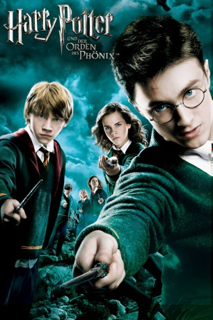

gesehen am 09.03.2015
gesehen am 09.03.2015Alternativ: Harry Potter and the Order of the Phoenix gesehen am 09.03.2015
 
 IMDB-Wertung: 7.5 / 10
IMDB-Wertung: 7.5 / 10  Metascore:
Metascore: 
Nach seinem letzten Abenteuer, das mit der dramatischen Rückkehr seines Erzfeindes Lord Voldemort endete, hat Harry Potter wieder der graue Alltag empfangen. Wie üblich muss er auch diese Sommerferien wieder bei seinen verhassten Verwandten, den Dursleys, verbringen. Das ändert sich jedoch schlagartig, als Harry eines Abends zusammen mit seinem Cousin Dudley von zwei Dementoren angegriffen wird. Er kann diese zwar mit Hilfe eines Zaubers vertreiben, handelt sich hierdurch aber ungerechterweise eine Vorladung vor das Zaubereigericht ein, da er in Gegenwart der Menschen gezaubert hat.
Jahr: 2007
Dauer: 138 Minuten
FSK: 12
Land: England Studio: Warner Bros.Tonspuren: DD5.1 - ,
Untertitel:
Auflösung: 1080p (1920×800) Größe: 12288 MB
Genre: Abenteuer, Familie, Fantasy, Mystery
Regisseur: David Yates
Drehbuch: Michael Goldenberg, J.K. Rowling
Soundtrack: Nicholas Hooper
Darsteller:
 Daniel Radcliffe als Harry Potter
Daniel Radcliffe als Harry Potter Harry Melling als Dudley Dursley
Harry Melling als Dudley Dursley Miles Jupp als TV Weatherman
Miles Jupp als TV Weatherman Fiona Shaw als Aunt Petunia Dursley
Fiona Shaw als Aunt Petunia Dursley Jessica Hynes als Mafalda Hopkirk
Jessica Hynes als Mafalda Hopkirk Adrian Rawlins als James Potter
Adrian Rawlins als James Potter Geraldine Somerville als Lily Potter
Geraldine Somerville als Lily Potter Robert Pattinson als Cedric Diggory , archive footage
Robert Pattinson als Cedric Diggory , archive footage Ralph Fiennes als Lord Voldemort
Ralph Fiennes als Lord Voldemort Natalia Tena als Nymphadora Tonks
Natalia Tena als Nymphadora Tonks Brendan Gleeson als Alastor 'Mad-Eye' Moody
Brendan Gleeson als Alastor 'Mad-Eye' Moody George Harris als Kingsley Shacklebolt
George Harris als Kingsley Shacklebolt Gary Oldman als Sirius Black
Gary Oldman als Sirius Black Mark Williams als Arthur Weasley
Mark Williams als Arthur Weasley David Thewlis als Remus Lupin
David Thewlis als Remus Lupin Maggie Smith als Minerva McGonagall
Maggie Smith als Minerva McGonagall Julie Walters als Molly Weasley
Julie Walters als Molly Weasley Emma Watson als Hermione Granger
Emma Watson als Hermione Granger Rupert Grint als Ron Weasley
Rupert Grint als Ron Weasley James Phelps als Fred Weasley
James Phelps als Fred Weasley Oliver Phelps als George Weasley
Oliver Phelps als George Weasley Bonnie Wright als Ginny Weasley
Bonnie Wright als Ginny Weasley Robert Hardy als Cornelius Fudge
Robert Hardy als Cornelius Fudge Jason Isaacs als Lucius Malfoy
Jason Isaacs als Lucius Malfoy Chris Rankin als Percy Weasley
Chris Rankin als Percy Weasley Michael Gambon als Albus Percival Wulfric Brian Dumbledore
Michael Gambon als Albus Percival Wulfric Brian Dumbledore Imelda Staunton als Dolores Umbridge
Imelda Staunton als Dolores Umbridge Tom Felton als Draco Malfoy
Tom Felton als Draco Malfoy Jamie Waylett als Vincent Crabbe
Jamie Waylett als Vincent Crabbe Josh Herdman als Gregory Goyle
Josh Herdman als Gregory Goyle Matthew Lewis als Neville Longbottom
Matthew Lewis als Neville Longbottom David Bradley als Argus Filch
David Bradley als Argus Filch Devon Murray als Seamus Finnigan
Devon Murray als Seamus Finnigan Alan Rickman als Severus Snape
Alan Rickman als Severus Snape Emma Thompson als Sybil Trelawney
Emma Thompson als Sybil Trelawney Alfred Enoch als Dean Thomas
Alfred Enoch als Dean Thomas Warwick Davis als Filius Flitwick
Warwick Davis als Filius Flitwick Helena Bonham Carter als Bellatrix Lestrange
Helena Bonham Carter als Bellatrix Lestrange Robbie Coltrane als Rubeus Hagrid
Robbie Coltrane als Rubeus Hagrid Richard Leaf als John Dawlish
Richard Leaf als John DawlishDatei: X:\7+mehr(A-Z)\Harry Potter\Harry Potter 5 - und der Orden des Phönix (2007, FSK12, 1920x800).mkv seit 15.02.2015
Festplatte: HD Collection-7+mehr(A-Z)+Person
 Es gibt insgesamt 17 Filme in der Gruppe '7+mehr(A-Z)\Harry Potter'
Es gibt insgesamt 17 Filme in der Gruppe '7+mehr(A-Z)\Harry Potter'